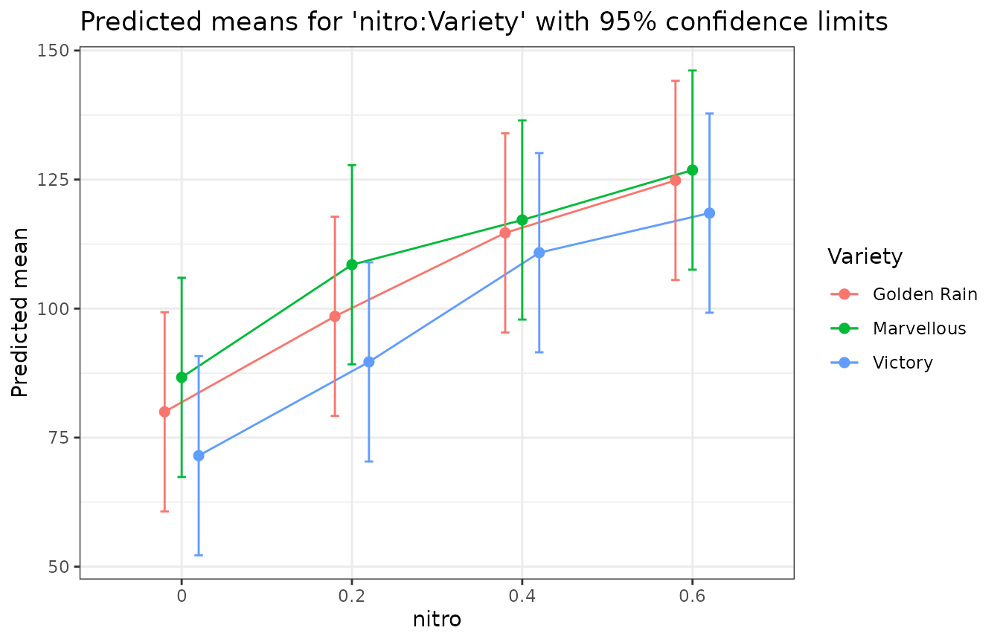
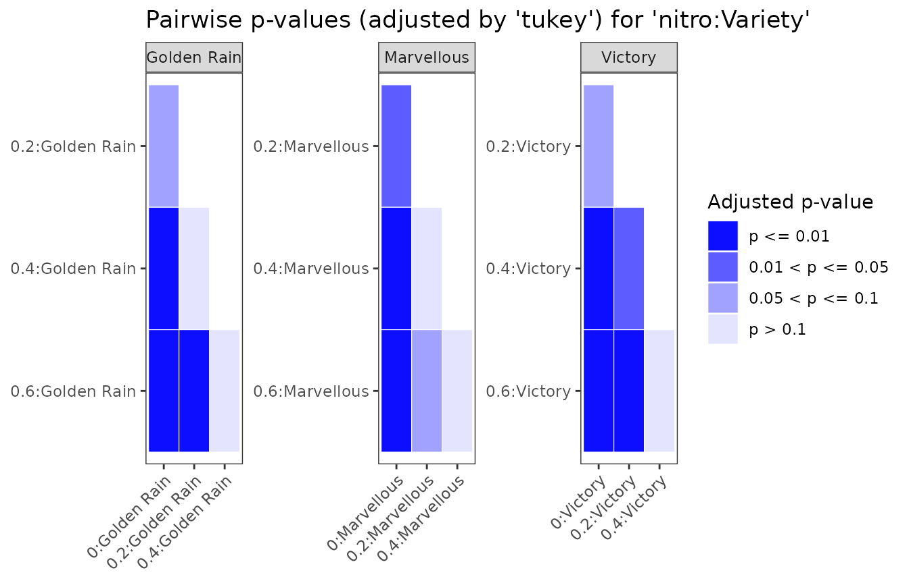

predictmeans gives predicted (least-squares) means, standard errors,
LSDs and pairwise comparisons for lm, glm,
aov, gls, lme, lmer,
glmer, glmmTMB and gam models,
with Kenward–Roger or Satterthwaite degrees of freedom for mixed models,
and permutation tests.
A split-plot experiment
The oats data (Yates 1935) are a split plot: three varieties on whole plots within six blocks, four nitrogen levels on subplots.
library(predictmeans)
Oats <- as.data.frame(nlme::Oats)
Oats$nitro <- factor(Oats$nitro)
fm <- lmer(yield ~ nitro * Variety + (1 | Block/Variety), data = Oats)Predicted means and pairwise comparisons
pm <- predictmeans(fm, "nitro:Variety", atvar = "Variety", adj = "tukey",
plot = FALSE, prtnum = FALSE)
summary(pm)
#> Predicted means for 'nitro:Variety' (lmerMod model; df: Kenward-Roger, Kenward-Roger adjusted SEs)
#> Confidence limits: 95%
#>
#> nitro Variety estimate std.error df conf.low conf.high group
#> 0 Golden Rain 80.00 9.107 16.08 60.70 99.3 A
#> 0 Marvellous 86.67 9.107 16.08 67.37 106.0 A
#> 0 Victory 71.50 9.107 16.08 52.20 90.8 A
#> 0.2 Golden Rain 98.50 9.107 16.08 79.20 117.8 AB
#> 0.2 Marvellous 108.50 9.107 16.08 89.20 127.8 B
#> 0.2 Victory 89.67 9.107 16.08 70.37 109.0 A
#> 0.4 Golden Rain 114.67 9.107 16.08 95.37 134.0 BC
#> 0.4 Marvellous 117.17 9.107 16.08 97.87 136.5 B
#> 0.4 Victory 110.83 9.107 16.08 91.54 130.1 B
#> 0.6 Golden Rain 124.83 9.107 16.08 105.53 144.1 C
#> 0.6 Marvellous 126.83 9.107 16.08 107.53 146.1 B
#> 0.6 Victory 118.50 9.107 16.08 99.20 137.8 B
#>
#> 18 pairwise comparisons within each level of Variety.
#> SED: min 7.683, mean 7.683, max 7.683
#> LSD (5%): min 15.47, mean 15.47, max 15.47
#> p-values: t tests, adjusted by 'tukey'.
#> Means sharing a letter are not significantly different at the 5% level within each level of Variety.atvar = "Variety" compares the nitrogen levels within
each variety, with Tukey adjustment within each variety.
Tables to work with
Every result carries three stable tables: means,
pairs and settings. They are plain data
frames, so they are easy to filter, join or export.
head(pm$means)
#> nitro Variety estimate std.error df conf.low conf.high group n
#> 1 0 Golden Rain 80.00000 9.10701 16.08144 60.70194 99.29806 A 6
#> 2 0 Marvellous 86.66667 9.10701 16.08144 67.36861 105.96472 A 6
#> 3 0 Victory 71.50000 9.10701 16.08144 52.20194 90.79806 A 6
#> 4 0.2 Golden Rain 98.50000 9.10701 16.08144 79.20194 117.79806 AB 6
#> 5 0.2 Marvellous 108.50000 9.10701 16.08144 89.20194 127.79806 B 6
#> 6 0.2 Victory 89.66667 9.10701 16.08144 70.36861 108.96472 A 6
#> estimable
#> 1 TRUE
#> 2 TRUE
#> 3 TRUE
#> 4 TRUE
#> 5 TRUE
#> 6 TRUE
head(pm$pairs)
#> level1 level2 by estimate std.error df
#> 1 0:Golden Rain 0:Marvellous <NA> -6.666667 9.715020 30.23080
#> 2 0:Golden Rain 0:Victory <NA> 8.500000 9.715020 30.23080
#> 3 0:Marvellous 0:Victory <NA> 15.166667 9.715020 30.23080
#> 4 0:Golden Rain 0.2:Golden Rain Golden Rain -18.500000 7.682948 45.00014
#> 5 0:Marvellous 0.2:Golden Rain <NA> -11.833333 9.715020 30.23080
#> 6 0:Victory 0.2:Golden Rain <NA> -27.000000 9.715020 30.23080
#> statistic p.value p.adj conf.low conf.high lsd adj.conf.low
#> 1 -0.6862226 0.497802546 NA -26.501035 13.167702 19.83437 NA
#> 2 0.8749338 0.388508422 NA -11.334369 28.334369 19.83437 NA
#> 3 1.5611564 0.128895695 NA -4.667702 35.001035 19.83437 NA
#> 4 -2.4079299 0.020203566 0.09004248 -33.974250 -3.025750 15.47425 -38.99579
#> 5 -1.2180451 0.232628340 NA -31.667702 8.001035 19.83437 NA
#> 6 -2.7792016 0.009281361 NA -46.834369 -7.165631 19.83437 NA
#> adj.conf.high p.method
#> 1 NA tukey
#> 2 NA tukey
#> 3 NA tukey
#> 4 1.995794 tukey
#> 5 NA tukey
#> 6 NA tukeyThe same tables come from as.data.frame() or, with the
generics package, tidy():
head(as.data.frame(pm, what = "pairs"), 3)
#> level1 level2 by estimate std.error df statistic
#> 1 0:Golden Rain 0:Marvellous <NA> -6.666667 9.71502 30.2308 -0.6862226
#> 2 0:Golden Rain 0:Victory <NA> 8.500000 9.71502 30.2308 0.8749338
#> 3 0:Marvellous 0:Victory <NA> 15.166667 9.71502 30.2308 1.5611564
#> p.value p.adj conf.low conf.high lsd adj.conf.low adj.conf.high
#> 1 0.4978025 NA -26.501035 13.16770 19.83437 NA NA
#> 2 0.3885084 NA -11.334369 28.33437 19.83437 NA NA
#> 3 0.1288957 NA -4.667702 35.00104 19.83437 NA NA
#> p.method
#> 1 tukey
#> 2 tukey
#> 3 tukeyPlots
ggplot2::autoplot(pm)
ggplot2::autoplot(pm, type = "pvalue")
predictmeans() draws its classic plots with
plot = TRUE (since 2.0 the default is FALSE;
options(predictmeans.plot = TRUE) sets it for a session);
which.plots chooses among the means, bar, p-value and
back-transformed plots.
Degrees of freedom and standard errors
df_method = "auto" (the default) chooses the df by the
model:
| Model | Default df | Other choices of df_method
|
|---|---|---|
REML lmer, lme, gls
|
Kenward–Roger, with adjusted SEs (as SAS DDFM=KR) |
"Satterthwaite", "containment",
"between-within", "KR-expected",
"KR-average"
|
ML lmer, lme, gls
|
Satterthwaite, from the ML likelihood |
"containment", "between-within"
|
glmer, glmmTMB
|
"inner-outer": the df of the grouping level at which
each effect varies |
"containment", "between-within"
(glmer), "residual"
|
glm, gam: Poisson, binomial, negative
binomial |
none: z tests ("asymptotic (z)"), as emmeans and SAS
GLIMMIX |
"residual" (t tests, as 1.x) |
lm; glm, gam with an
estimated dispersion (Gaussian, Gamma, quasi-) |
residual df | |
aov with Error()
|
by strata, Satterthwaite’s df across strata |
settings$df_method of the result says which was used.
For the split plot (a REML lmer fit) the default gives
Kenward–Roger SEs and df. Other choices:
# Satterthwaite df
pm_s <- predictmeans(fm, "Variety", df_method = "Satterthwaite", plot = FALSE, prtnum = FALSE)
# SAS DDFM=CONTAIN (containment) df, with unadjusted standard errors
pm_c <- predictmeans(fm, "Variety", df_method = "containment", plot = FALSE, prtnum = FALSE)
rbind(Satterthwaite = pm_s$means$df[1], containment = pm_c$means$df[1])
#> [,1]
#> Satterthwaite 8.868755
#> containment 10.000000df_method = "between-within" gives SAS’s
DDFM=BETWITHIN df. Kenward–Roger uses the observed
information of the variance parameters, as SAS does;
"KR-expected" uses the expected information, as pbkrtest
and emmeans. The two agree in balanced designs; with missing values only
the observed information is valid, and in simulations it kept the 5%
level where the expected one rejected 8.5% of true hypotheses.
"KR-average" uses the average information of Genstat’s REML
and gives Genstat’s df (with vcov_adjust = FALSE, also its
SEDs). For lme and gls models with correlation
or variance structures, "Satterthwaite",
"Kenward-Roger", "KR-expected" and
"KR-average" are available too.
vignette("sas", package = "predictmeans") shows how each
matches SAS PROC MIXED.
ML fits get Satterthwaite df because Kenward–Roger’s adjustment is
derived for REML. For Poisson, binomial and negative binomial
glm fits the dispersion is known, so there are no residual
df to use: in simulations, t tests on the residual df rejected 0.3–4.5%
of true hypotheses at the 5% level, and z tests 3.6–5.7%.
Before reading the means, check the model: pm_check()
and residplot(), in
vignette("checking", package = "predictmeans").
Averaging over other factors
Means of a main effect average over the other factors in the model.
weights chooses how: "equal" (the default),
"proportional" (as SAS LSMEANS / OM),
"outer", "cells" or "flat", with
the same definitions as emmeans.
predictmeans(fm, "nitro", weights = "proportional", plot = FALSE, prtnum = FALSE)$means
#> nitro estimate std.error df conf.low conf.high n estimable
#> 1 0 79.38889 7.174754 6.791824 62.31730 96.46047 18 TRUE
#> 2 0.2 98.88889 7.174754 6.791824 81.81730 115.96047 18 TRUE
#> 3 0.4 114.22222 7.174754 6.791824 97.15064 131.29381 18 TRUE
#> 4 0.6 123.38889 7.174754 6.791824 106.31730 140.46047 18 TRUECustom contrasts
specify_contrast() writes contrasts by the names of the
means; contrastmeans() tests them.
cm <- specify_contrast(Kmatrix(fm, "nitro:Variety"),
N_effect_Victory = `0.6:Victory` - `0:Victory`,
N_effect_Victory_vs_others = (`0.6:Victory` - `0:Victory`) -
((`0.6:Golden Rain` - `0:Golden Rain`) + (`0.6:Marvellous` - `0:Marvellous`)) / 2)
contrastmeans(fm, "nitro:Variety", ctrmatrix = cm)
#> $`The t tests of the specified contrasts`
#> Estimate Std. Error t value df Pr(>|t|)
#> N_effect_Victory 47.0 7.6829 6.1174 45.0001 0.0000
#> N_effect_Victory_vs_others 4.5 9.4097 0.4782 45.0001 0.6348
#> lower.CL upper.CL
#> N_effect_Victory 31.5257 62.4743
#> N_effect_Victory_vs_others -14.4520 23.4520
#> attr(,"Note")
#> [1] "The p-value is adjusted by 'none' method, if p-value = 0 means p-value < 0.0001."
#>
#> $K
#> 0:Golden Rain 0:Marvellous 0:Victory 0.2:Golden Rain
#> N_effect_Victory 0.0 0.0 -1 0
#> N_effect_Victory_vs_others 0.5 0.5 -1 0
#> 0.2:Marvellous 0.2:Victory 0.4:Golden Rain
#> N_effect_Victory 0 0 0
#> N_effect_Victory_vs_others 0 0 0
#> 0.4:Marvellous 0.4:Victory 0.6:Golden Rain
#> N_effect_Victory 0 0 0.0
#> N_effect_Victory_vs_others 0 0 -0.5
#> 0.6:Marvellous 0.6:Victory
#> N_effect_Victory 0.0 1
#> N_effect_Victory_vs_others -0.5 1Models with covariates
Kmatrix() builds the reference grid behind every mean.
Covariates are set to their means by default (cov_reduce
changes that), and may enter the model through transformations such as
poly(), ns(), log() or smooth
terms of a gam.
data(Drug)
fm_glm <- glm(cbind(R, N - R) ~ Drug + log10Dose, family = binomial, data = Drug)
predictmeans(fm_glm, "Drug", pairwise = TRUE, plot = FALSE, prtnum = FALSE)$means
#> Drug log10Dose estimate std.error df conf.low conf.high
#> 1 Morphine 0.603011 0.1739917 0.1223041 Inf -0.06571997 0.4137034
#> 2 Amidone 0.603011 0.5660805 0.1370736 Inf 0.29742128 0.8347398
#> 3 Phenadoxone 0.603011 2.4185555 0.2045918 Inf 2.01756299 2.8195480
#> 4 Pethidine 0.603011 -1.7574624 0.1693986 Inf -2.08947760 -1.4254471
#> response response.std.error response.conf.low response.conf.high group n
#> 1 0.5433885 0.03034579 0.4835759 0.6019756 A 3
#> 2 0.6378583 0.03166332 0.5738120 0.6973562 B 3
#> 3 0.9182314 0.01536127 0.8826288 0.9437231 C 3
#> 4 0.1471084 0.02125403 0.1101238 0.1938091 D 5
#> estimable
#> 1 TRUE
#> 2 TRUE
#> 3 TRUE
#> 4 TRUEFor a glm the means are also given on the response scale (here
probabilities); see vignette("response-scale").
More
-
vignette("checking", package = "predictmeans"): checking the model withpm_check()andresidplot(). -
vignette("contrasts", package = "predictmeans"): other adjustments for multiple testing, comparisons with a control, trends, joint tests (slices) and slopes. -
vignette("response-scale", package = "predictmeans"): GLMs, GLMMs and transformed responses: means and standard errors on the response scale, ratios and odds ratios. -
vignette("missing-cells", package = "predictmeans"): empty cells, confounded factors and means that cannot be estimated. -
vignette("R2_glmm", package = "predictmeans"): adjusted R² for mixed models. -
vignette("migrating", package = "predictmeans"): what changed from version 1.x. -
vignette("resampling", package = "predictmeans"): permutation and parametric bootstrap tests (permmodels(),permlmer(),permindex(),bootmodels()) for linear, generalized linear and mixed models, also for pairwise comparisons and contrasts throughpermlist. -
vignette("smooth", package = "predictmeans"): smooth curves in mixed models (semireg(),semipred()), with simultaneous confidence bands.